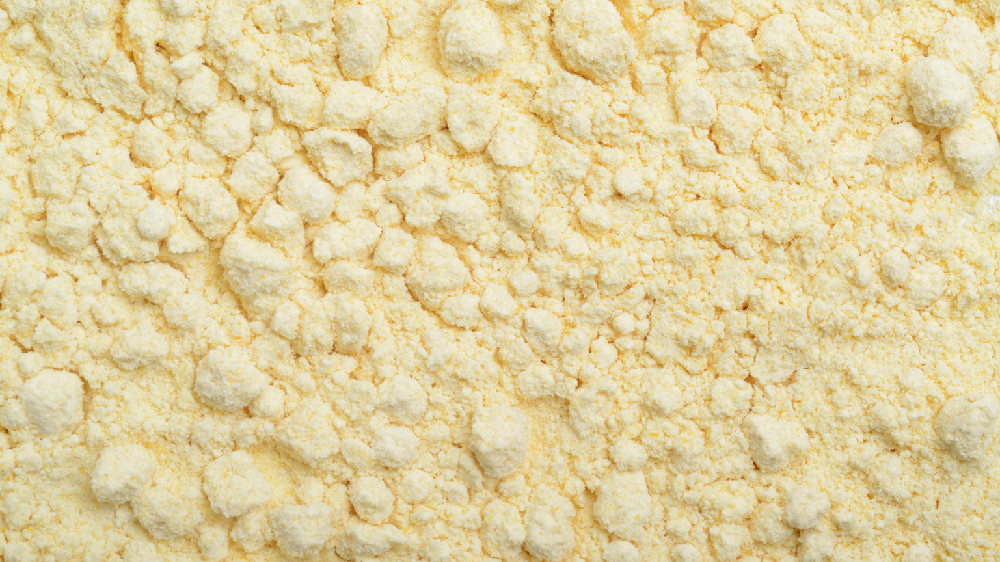

Брашна и протеини
Механично обезмаслен слънчогледов протеин
Слънчогледов протеин (механично обезмаслен) на едро — без разтворители, директна доставка от България.
Детайли за поръчка
Опции за опаковка
Висококачествен обезмаслен слънчогледов протеин — насипен доставчик
В Agros-98 AD сме водещ европейски насипен едро доставчик на механично обезмаслен слънчогледов протеин. Нашият протеинов концентрат е произведен от висококачествени български слънчогледови семена, осигурявайки изключително функционален, 50–65% растителен протеин, перфектно подходящ за съвременното производство на храни с чиста етикетна информация.
Екстракция без разтворители чрез студено пресоване
За разлика от конвенционалните соеви или рапични протеини, които разчитат в голяма степен на агресивни химически разтворители като хексан за извличане на маслото, нашият слънчогледов протеин е изключително механично обезмаслен. Пресоваме студено белените слънчогледови ядки при високо налягане, за да отделим маслената фракция. Остатъчният пресован кюспе се смила майсторски, пресява и класифицира за концентриране на глобулините и албумините, в резултат на което се получава перфектно чист, химически свободен протеинов прах с само 3–8% остатъчно масло.
Аминокиселинен профил и веган смесване
Слънчогледовият протеин е изключителна алтернатива на соята или суроватката, привлекателна за бързо нарастващите хипоалергенни и веган пазари. Той се отличава с мек, неутрален до леко ядков вкус, изискващ значително по-малко маскиращи агенти в спортните прахове. Въпреки че е невероятно богат на серосъдържащи аминокиселини като метионин и цистеин, той е леко ограничен по лизин. За формулировки, изискващи 100% пълен PDCAAS резултат, нашият слънчогледов протеин се смесва перфектно с грахов протеин (богат на лизин), за да се създаде крайната хипоалергенна растителна протеинова матрица.
Промишлени приложения: аналози на месо и хлебарство
- Веган аналози на месо: Демонстрира мощни водосвързващи, емулгиращи и текстуриращи свойства при екструзия на месо с висока влажност (HMME) и производство на TVP.
- Спортно хранене: Ефективно се разтваря във вода или растителни млека за RTD (готови за пиене) шейкове и смеси от протеинови прахове.
- Обогатяване на хлебарски изделия: Интегрира се безпроблемно в обогатени с протеин хлябове, функционални снаксове и енергийни барове, без да нарушава структурата на трохата или хидратацията на тестото.
Технически спецификации
| Параметър | Спецификация |
|---|---|
| Протеин (сухо вещество) | 50–65% |
| Остатъчни мазнини | 3–8% |
| Влажност | макс. 8% |
| Диетични фибри | 8–15% |
| Пепел | макс. 7% |
| Цвят | Светлосиво-зелен |
| Процес | Механично студено пресоване, без разтворители |
Документация
Налична с всяка пратка
Сертификат за анализ
Пълен анализ на параметрите за партида
СтандартенСертификат за произход
Български произход, EUR.1 за ЕС
СтандартенФитосанитарен сертификат
Издаден от БАБХ
При поискванеДоклад от лаборатория на трета страна
Изпитване в акредитирана лаборатория
При поискванеЧЗВ
Често задавани въпроси
Заинтересовани от Слънчогледов протеин?
Свържете се с нашия търговски екип за обсъждане на цени, мостри и условия за доставка.